1. Introduction
Apa itu HTML?
HTML adalah standard markup languanges untuk membuat halaman web.
Document HTML Sederhana
Contoh
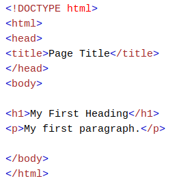Penjelasan Contoh
HTML Tags
HTML tags adalah nama elemen yang dikelilingi oleh tanda sudut :
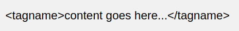Web Browsers
Tujuan dari browser web (Chrome, Edge, Firefox, Safari) adalah untuk membaca dokumen HTML dan menampilkannya. Browser tidak menampilkan tag HTML, tetapi menggunakannya untuk menentukan cara menampilkan dokumen:
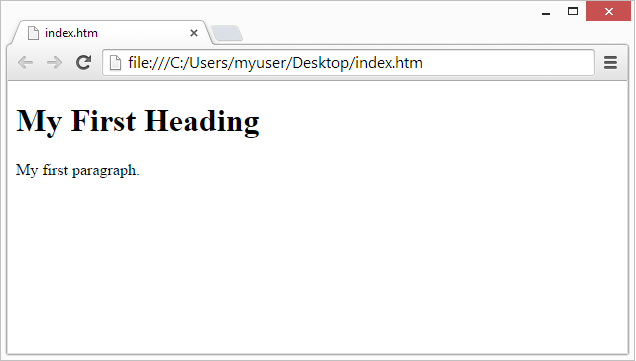Struktur Halaman HTML
Di bawah ini adalah visualisasi struktur halaman HTML:
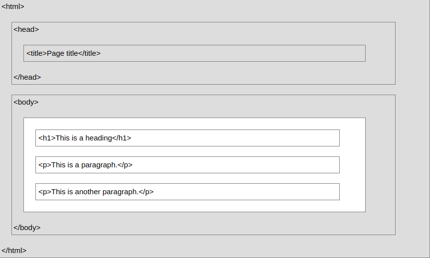Deklarasi !DOCTYPE
Deklarasi !DOCTYPE merepresentasikan tipe dokumen, dan membantu browser untuk menampilkan halaman web secara benar.
Itu hanya muncul sekali, dibagian atas halaman (sebelum tag HTML apa pun)
Deklarasi !DOCTYPE tidak peka huruf besar-kecil.
Deklarasi !DOCTYPE untuk HTML 5 adalah :
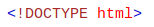Sejarah HTML
Sejak awal World Wide Web, ada banyak versi HTML:
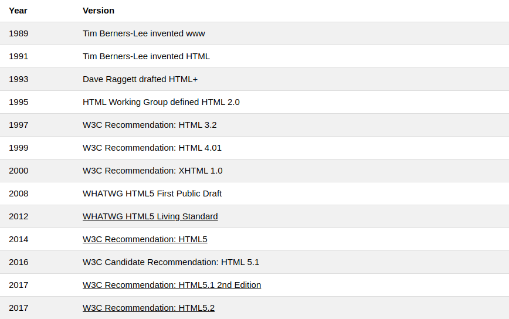2. HTML Editors
Menulis HTML menggunakan Notepad atau Text Editor
Halaman web dapat dibuat dan dimodifikasi dengan menggunakan editor HTML profesional.
Namun, untuk mempelajari HTML kami sarankan editor teks sederhana seperti Notepad (PC) atau TextEdit (Mac).
Kami percaya menggunakan editor teks sederhana adalah cara yang baik untuk belajar HTML.
Ikuti langkah-langkah di bawah ini untuk membuat halaman web pertama Anda dengan Notepad atau TextEdit.
Step 1: Buka Notepad (PC)
Windows 8 atau yang terbaru :
Buka Layar Start(symbol window di bawah kiri pada layar). Ketik Notepad.
Windows 7 atau yang sebelumnya :
Open Start > Programs > Accessories > Notepad
Langkah ini berbeda pada setiap OS.
Step 2: Tulis beberapa HTML
Tulis atau copy beberapa HTML ke Notepad.
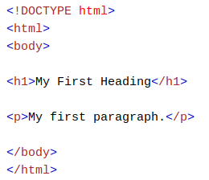Step 3: Simpan HTML Page
Simpan file di komputer Anda. Pilih File> Simpan sebagai di menu Notepad.
Beri nama file "index.htm" dan atur enkode menjadi UTF-8 (yang merupakan enkode yang lebih disukai untuk file HTML).
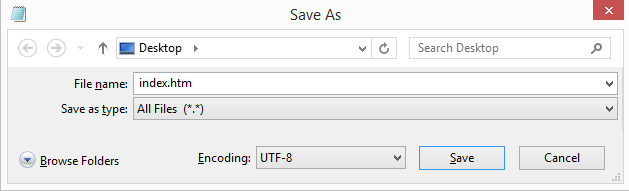Step 4: Melihat halaman HTML pada browser
Buka file HTML yang disimpan di browser favorit Anda (klik dua kali pada file tersebut, atau klik kanan - dan pilih "Buka dengan").
Hasilnya akan terlihat seperti ini:
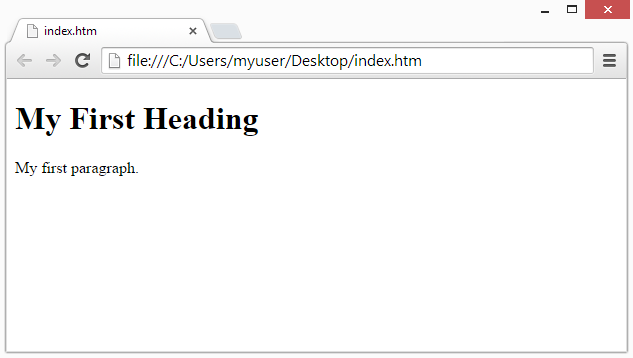W3Schools Online Editor
Dengan editor online gratis kami, Anda dapat mengedit kode HTML dan melihat hasilnya di browser Anda.
Ini adalah alat yang sempurna ketika Anda ingin menguji kode dengan cepat. Ini juga memiliki kode warna dan kemampuan untuk menyimpan dan berbagi kode dengan orang lain:
Contoh:
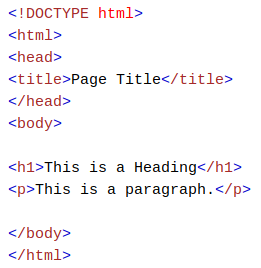3. Contoh Basic HTML
Jangan khawatir jika contoh ini menggunakan tag yang belum Anda pelajari.
Anda akan belajar tentang mereka di bab-bab selanjutnya.
Dokumen HTML
Semua dokumen HTML harus dimulai dengan deklarasi tipe dokumen: ! DOCTYPE html.
Dokumen HTML itu sendiri dimulai dengan html dan diakhiri dengan /html.
Bagian yang terlihat dari dokumen HTML adalah antara body dan /body.
Contoh:
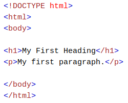Headings HTML
Judul HTML didefinisikan dengan tag h1 hingga h6.
h1 menentukan judul yang paling penting. h6 mendefinisikan tajuk paling tidak penting:
Contoh:
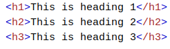Paragraf HTML
Paragraf HTML didefinisikan dengan tag 'p':
Contoh:
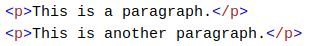HTML Links
Tautan HTML didefinisikan dengan tag 'a':
Contoh:
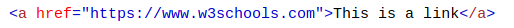Tujuan tautan ditentukan dalam atribut 'href'.
Atribut digunakan untuk memberikan informasi tambahan tentang elemen HTML.
Anda akan belajar lebih banyak tentang atribut di bab selanjutnya.
HTML Images
Gambar HTML didefinisikan dengan tag 'img'.
File sumber (src), teks alternatif (alt), lebar, dan tinggi disediakan sebagai atribut:
Contoh:
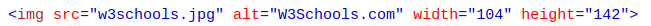Tombol HTML
Tombol HTML ditentukan dengan tag 'button':
Contoh:
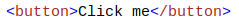HTML Lists
Daftar HTML didefinisikan dengan tag 'ul' (unordered / bullet list) atau 'ol' (daftar terurut / bernomor), diikuti oleh tag 'li' (daftar item):
Contoh:
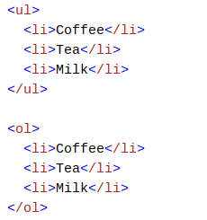4. Elemen HTML
Elemen HTML
Elemen HTML biasanya terdiri dari tag awal dan tag akhir, dengan konten yang disisipkan di antara:
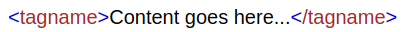Elemen HTML adalah segalanya mulai dari tag awal hingga tag akhir:
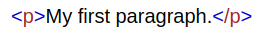 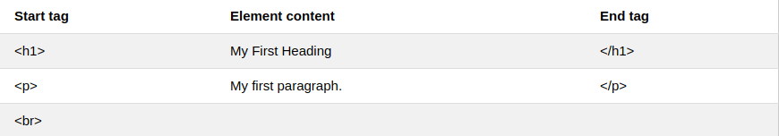Nested HTML Elements
Elemen HTML dapat disarangkan (elemen dapat berisi elemen).
Semua dokumen HTML terdiri dari elemen HTML bersarang.
Contoh ini berisi empat elemen HTML:
Contoh:
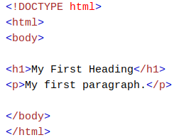Penjelasan Contoh
Elemen html mendefinisikan seluruh dokumen.
Ini memiliki tag awal 'html' dan tag akhir '/html'.
Di dalam elemen html adalah elemen body.
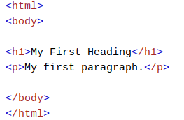Elemen body mendefinisikan badan dokumen.
Ini memiliki tag awal 'body' dan tag akhir '/body'.
Di dalam elemen 'body' ada dua elemen HTML lainnya: 'h1' dan 'p'.
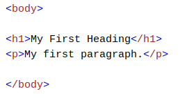Elemen 'h1' menentukan judul.
Ini memiliki tag awal 'h1' dan tag akhir '/h1'.
Konten elemen adalah: My First Heading.
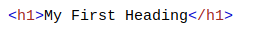Elemen 'p' mendefinisikan paragraf.
Ini memiliki tag awal 'p' dan tag akhir '/p'.
Konten elemen adalah: Paragraf pertama saya.
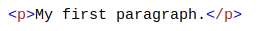Jangan Lupa Tag Penutup!
Beberapa elemen HTML akan ditampilkan dengan benar, bahkan jika Anda lupa tag akhirnya:
Contoh:
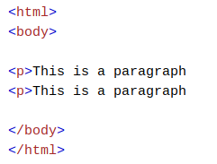Contoh di atas berfungsi di semua browser, karena tag penutup dianggap opsional.
Jangan pernah mengandalkan ini.
Mungkin menghasilkan hasil dan / atau kesalahan yang tidak terduga jika Anda lupa tag akhir.
Elemen kosong HTML
Elemen HTML tanpa konten disebut elemen kosong.
'br' adalah elemen kosong tanpa tag penutup (tag 'br' mendefinisikan jeda baris):
Contoh:
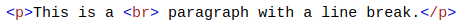Elemen kosong dapat "ditutup" di tag pembuka seperti ini: 'br /'.
HTML5 tidak memerlukan elemen kosong untuk ditutup. Tetapi jika Anda ingin validasi yang lebih ketat, atau jika Anda perlu membuat dokumen Anda dapat dibaca oleh parser XML, Anda harus menutup semua elemen HTML dengan benar.
Besar - Kecil Huruf Tidak Berpengaruh Pada HTML
Tag HTML tidak peka huruf besar-kecil: 'P' artinya sama dengan 'p'.
Standar HTML5 tidak memerlukan tag huruf kecil, tetapi W3C merekomendasikan huruf kecil dalam HTML, dan menuntut huruf kecil untuk tipe dokumen yang lebih ketat seperti XHTML.
isi atau konten dari sebuah web berbentuk paragraf
huruf italic
huruf bold


Untuk merubah warna huruf
tooltip paragraf
untuk memasukkan link
ini adalah tulisan
ini adalah tulisan lagi
Bring back
oh bring back
oh bring back my bonnie to me
to me.
Font style courier
ukuran font
ini pangkat bawah ini pangkat atas
BOLD
ITALIC
STRONG
Marked Text
Small Text
deleted text
Inserted Text
Subscript text
Superscript Text
Quotes
BLOCK QUOTES